Uttrakhand
Uttarakhand is known as much for its natural beauty as for its people and their culture. The state's unique culture encompasses traditional rites, ritual, beliefs, folklore, customs and language. The warm and friendly residents of the states, who also call themselves Pahari, celebrate throughout the year, marking their festivals with music and dance.
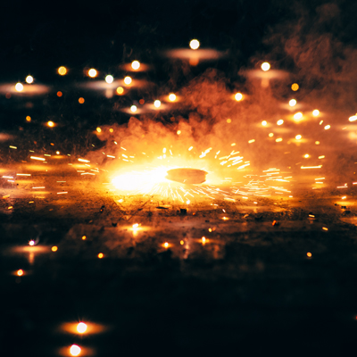
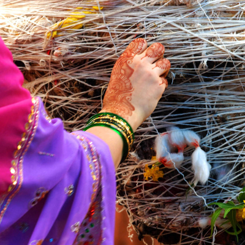
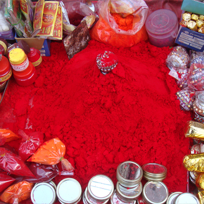
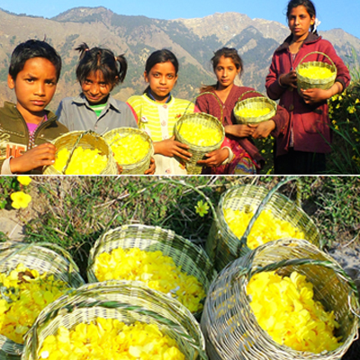
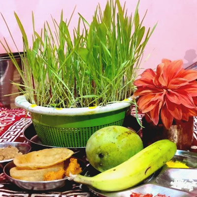
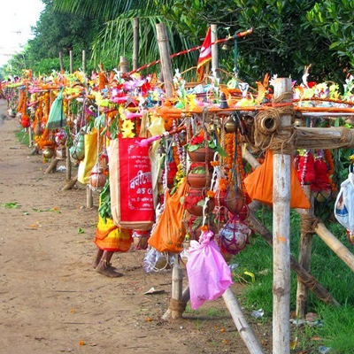
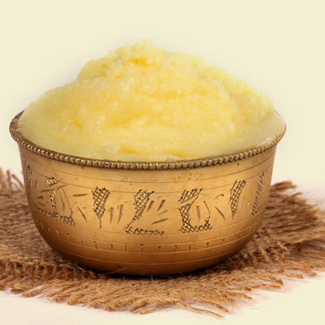
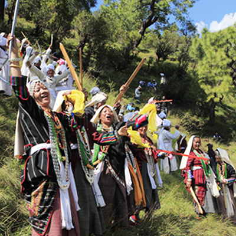
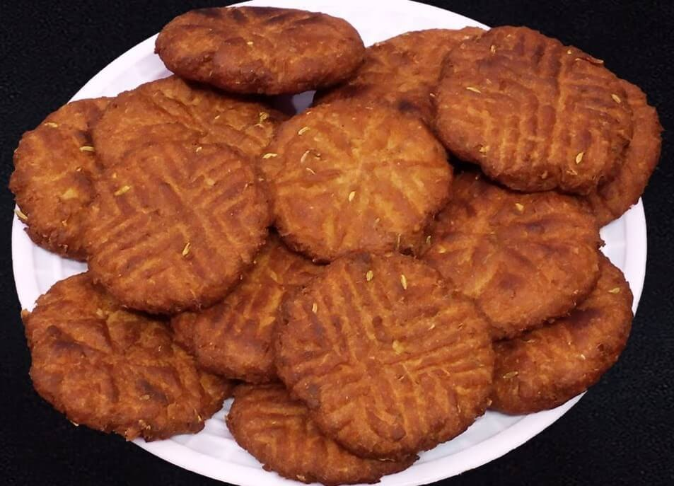
This is a traditional dish (pakwan) in Uttarakhand, also known as Rotana locally. It is a kind of bite size fried cookie made with whole wheat flour, milk, desi ghee, fennel seeds, semolina(suji) and jaggery. In some parts sugar is added instead of jaggery.
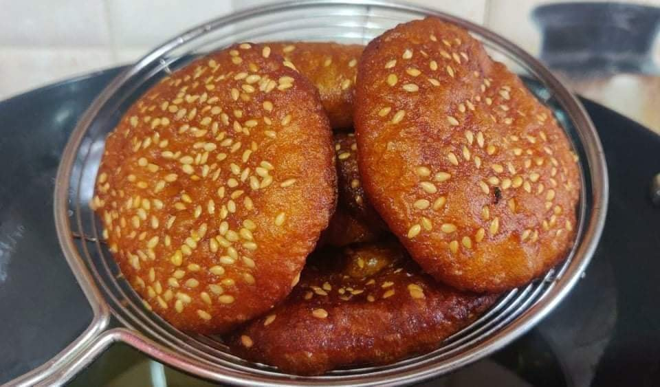
Arsa is a traditional sweet dish from Rajasthan, India. It is made with rice flour, jaggery, and ghee. The dough is shaped into small discs and deep-fried until golden brown.
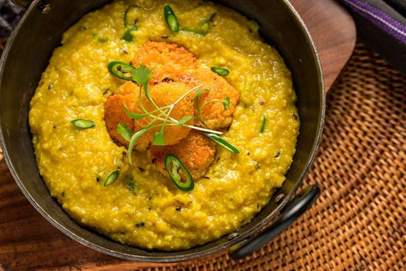
Phaanu is a dish that is famous mostly in the Garhwal region of Uttarakhand.It is rather complicated to prepare since it is made by mixing lentils of different varieties that are soaked in water overnight.
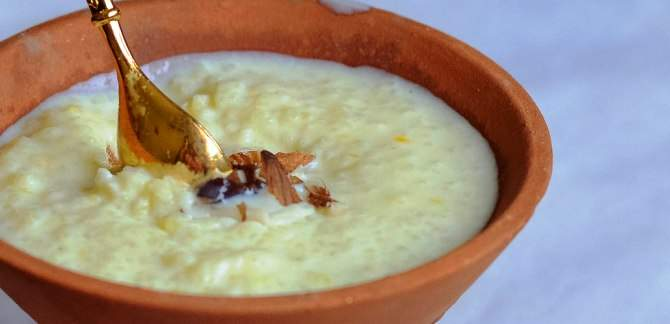
Jhangorais a type of millet that is the main ingredient of this dessert. Jhangora Ki Kheer has an unforgettable taste and is a must-try after a heavy meal of the Garhwali cuisines.
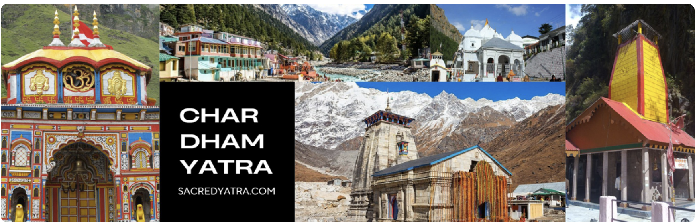
The Chota Char Dham (lit. 'the small four abodes/seats' or 'the small circuit of four abodes/seats') is an important modern Hindu pilgrimage circuit[1] in Uttarakhand, in the Indian Himalayas. Located in the Garhwal region of the state of Uttarakhand, the circuit consists of four sites—Gangotri, Yamunotri, Kedarnath, and Badrinath.[2] Badrinath is also one of the four destinations (with each destination being in different corners of the country) of the longer Char Dham from which the Chota Char Dham likely draws its name.[3][4] Akshaya Tritiya (April or May in the Gregorian calendar) marks the beginning of the Chota Char Dham Yatra and closes two days after Diwali, on the day of Bhai-Bij (or Bhai Dooj)[5] In May and June, tourists flock in large numbers, due to heavy rainfall greater chances of roadblocks or landslides in late July and August during monsoon season. The Annual Chota Char Dham Yatra resumed in May 2014, after being suspended during the 2013 Uttarakhand floods. The footfall has now improved due to proactive measures taken by the government of Uttarakhand.[6] In 2022, in just two months (10 June – 10 August), 2.8 million pilgrims have visited these Dhams.[7] A record 4.1 million pilgrims visited Chota Char dham in 2022.[8] Over 1.4 million pilgrims have already visited Kedarnath, over 600,000 have visited Gangotri, and over 500,000 have visited Yamunotri. Around 1.5 million pilgrims have already visited Badrinath the same year.[9] ]
Originally, the appellation Char Dham referred to a pilgrimage circuit encompassing four important temples cities — Puri, Rameswaram, Dwarka, and Badrinath — located roughly at the four cardinal points of the subcontinent. An archetypal All-India pilgrimage circuit, the formation of the original Char Dham is credited to the great 8th century reformer and philosopher Shankaracharya (Adi Sankara). In the original Char Dham, three of the four sites are Vaishnava (Puri, Dwarka and Badrinath) while one is Shaiva (Rameswaram). The Chota Char Dham appeared very likely in the second half of the 20th century, as a touristic (religious tourism) label coinned for a new pilgrimage circuit in the Garhwal Himalayas region, representative of all three major Hindu sectarian traditions, with two Shakti (goddess) sites, (Yamunotri and Gangotri), one Shaiva site (Kedarnath), and one Vaishnava site (Badrinath).[citation needed] Accessible until the 1950s only by arduous and lengthy walking trails in hilly area with height repeatedly exceeded 4000 meters, the sanctuairies constituting the nowadays Chota Char Dham were regularly visited by wandering ascetics and other religious people, and those who could afford a traveling entourage. While the individual sites and the ancient pilgrimage paths conducting to these were well known to Hindus on the plains below, they were not a particularly visible aspect of yearly religious culture. After the 1962 war between India and China, accessibility to these isolated places improved, as India undertook massive road building to border area and other infrastructure investments. As pilgrims were able to travel in mini buses, jeeps and cars to nearest points of four shrines, the Chota Char dham circuit was within the reach of people with middle income. Vehicles reach up to Badrinath temple and Gangotri, Yamunotri and Kedarnath are at a distance of 10 to 15 km from nearest motorable road.[citation needed] The Chota Char Dham pilgrimage circuit is promoted by Indian Central Government and the State of Uttarakhand, in service of both governments plans of economic development and infrastructure planning in this sensitive mountainous region.
| # | Place | Location | Speciality |
|---|---|---|---|
| 1 | Mussoorie | Dehradun District | Known as the "Queen of Hills," famous for its scenic beauty and pleasant weather. |
| 2 | Nainital | Kumaon Region | Renowned for its picturesque Naini Lake and surrounding mountains. |
| 3 | Rishikesh | Tehri Garhwal | Yoga Capital of the World, gateway to the Himalayas, and adventure sports hub. |
| 4 | Haridwar | Haridwar District | Famous for the Ganga Aarti at Har Ki Pauri and religious significance. |
| 5 | Auli | Chamoli District | Popular skiing destination with stunning views of the Himalayan peaks. |
| 6 | Kedarnath | Rudraprayag District | One of the holiest Hindu shrines and a part of the Char Dham Yatra. |
| 7 | Badrinath | Chamoli District | Another Char Dham site, known for the Badrinath Temple dedicated to Lord Vishnu. |
| 8 | Valley of Flowers | Chamoli District | A UNESCO World Heritage Site, famous for its alpine flowers and biodiversity. |
| 9 | Jim Corbett National Park | Nainital District | India's oldest national park, renowned for its tiger reserve and wildlife safaris. |
| 10 | Chopta | Rudraprayag District | Known as the "Mini Switzerland of Uttarakhand," offering trekking and natural beauty. |
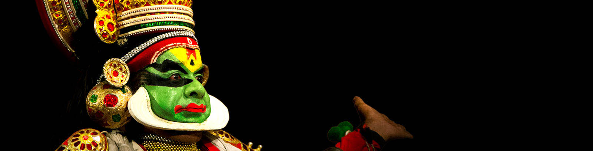
The intricately woven history of Kerala is deeply alluring, mystical and charming, all rolled into one. The first images that one gets when talking about Kerala Culture is of course, that of the oldest and most scientific martial arts known to man, Kalaripayattu
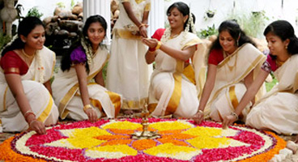
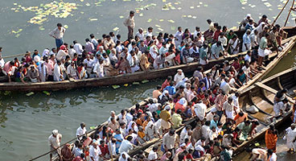
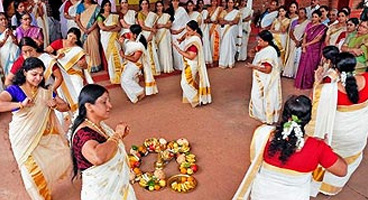
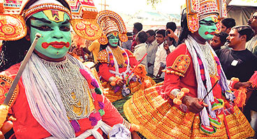
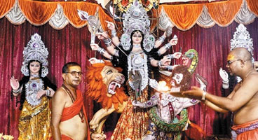
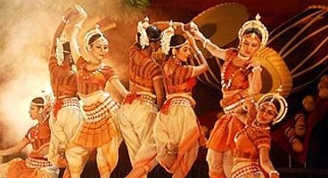
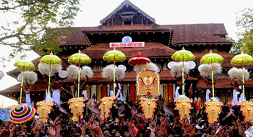
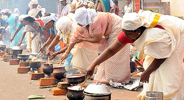
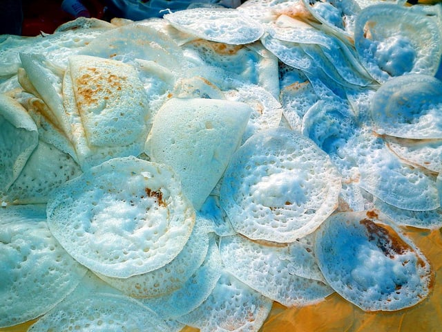
Ask anybody from Kerala what their favourite dish is from back home and they will swear by appam and stew! I think it's justified for them to do so because appam is just something that seems to be a revolution in the food world. It is a rice pancake with a soft and thick centre and a crispy, paper thin outside.
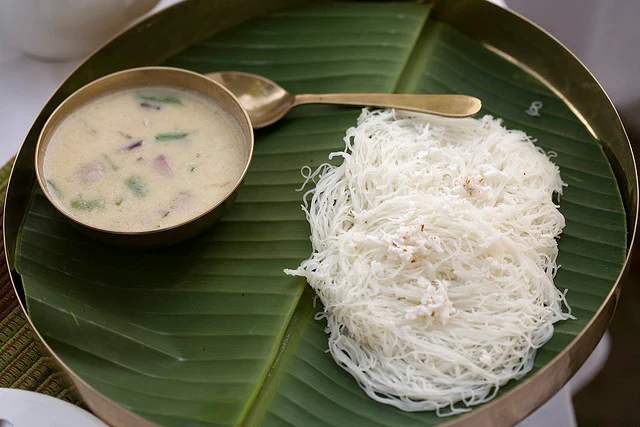
Idiyappam is basically made of rice flour, water and salt. Numerous strands of vermicelli are entwined together to make this version of an appam. Also known as noolappam, this Kerala dish can be paired with any curry and still taste great!
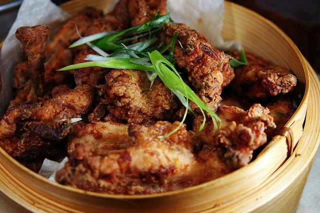
Nadan Kozhi Varuthathu (Spicy Chicken Fry).You can never go wrong with chicken fry! You take a chicken which is the favourite meat of 99% of the entire population and fry it! Who doesn't love fried stuff?! So, this version of a chicken fry is something that is out of this world. Served on a banana leaf, the chicken is fried with onion, garlic, chilli, vinegar and coriander.
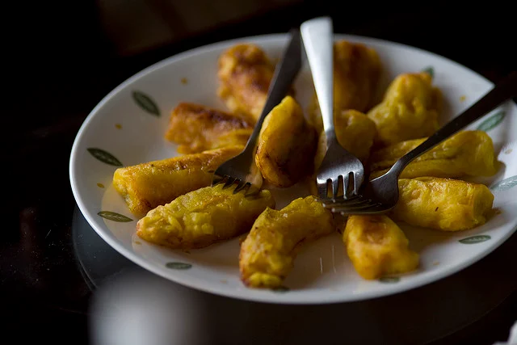
Pazham Pori or Ethakka Appam is juicy banana fritters that are a favourite tea time snack in Kerala. They are the perfect example of simple goodness. Ripe bananas coated in plain flour and deep fried in oil. Can anything go wrong? We don't think so!
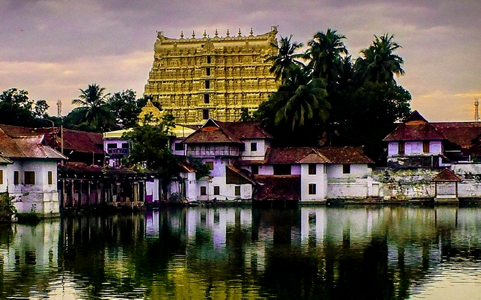
Standing tall, covered in all gold and fine intricate designs, and showcasing the grandeur of the legendary Dravidian architecture at its best, this temple of Lord Vishnu is spirituality at its best. Located in Thiruvananthapuram this temple is famed for several reasons apart from being one of the oldest temples in the country. Having found its mention in various ancient texts like the Puranas it drew a lot of media attention when people found several treasures dating back to the olden times. The treasure that was found consisted of golden statues dedicated to Lord Vishnu, Gold Coins, Jewelry, a golden throne, and many more. This place of worship remains thronged with tourists, devotees, and visitors throughout the year.
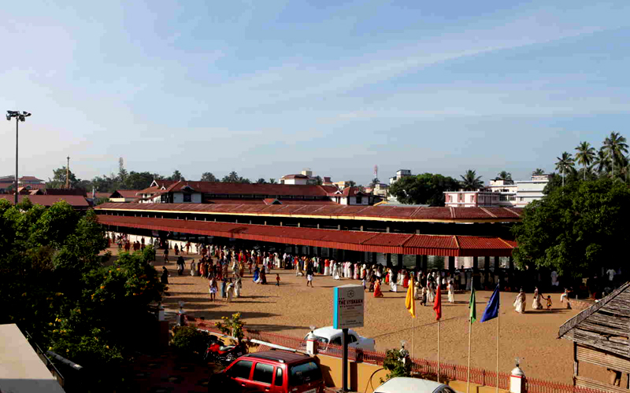
The people of Kerala are extremely religious and have a strong belief system that they follow strictly, which includes worshipping of various gods and goddesses. Guruvayoor Srikrishna Temple is dedicated to Lord Krishna and serves as the home for the 4 armed standing Krishna Deity who is worshipped here. The idol shows 4 arms of the lord and in each arm, he is seen holding different items in each hand like a conch, Sudarshana Chakra, mace, and the holy lotus basil. Devotees of Krishna from all over the world make it a point to visit this holy temple. Another interesting point of this temple is the presence of a simple water tank where Lord Shiva and his family have been believed to worshipped Lord Vishnu.
| # | Place | Location | Speciality |
|---|---|---|---|
| 1 | Munnar | Idukki District | Famous for its tea plantations, rolling hills, and cool climate. |
| 2 | Alleppey (Alappuzha) | Alappuzha District | Known as the "Venice of the East" for its backwaters and houseboat cruises. |
| 3 | Kochi (Cochin) | Ernakulam District | Blend of modern and historical sites, including Fort Kochi and the Chinese fishing nets. |
| 4 | Wayanad | Wayanad District | Known for its lush greenery, waterfalls, and wildlife sanctuaries. |
| 5 | Thekkady | Idukki District | Famous for the Periyar Wildlife Sanctuary and spice plantations. |
| 6 | Kovalam | Thiruvananthapuram District | Renowned for its crescent-shaped beaches and vibrant seaside atmosphere. |
| 7 | Varkala | Thiruvananthapuram District | Cliffside beaches with stunning views and natural mineral springs. |
| 8 | Bekal | Kasaragod District | Known for the Bekal Fort and pristine beaches. |
| 9 | Thrissur | Thrissur District | Famous for the Thrissur Pooram festival and cultural heritage. |
| 10 | Vagamon | Idukki and Kottayam Districts | Hill station with serene meadows, pine forests, and trekking trails. |